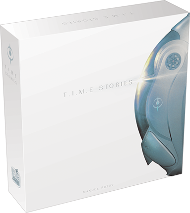
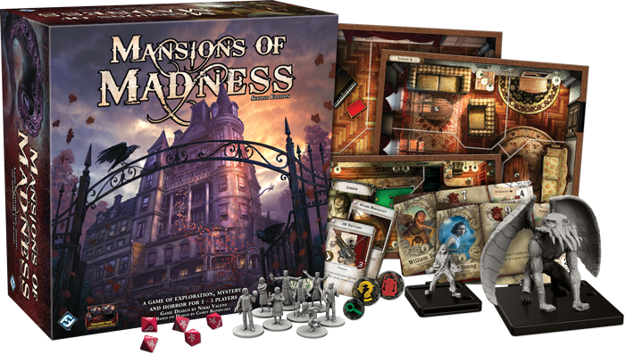

© Spampinato Gaetano
2018 - 2019


Het is een verhaal met kaarten en een bordspel. In dit spel ben je
vrij om je volledig uit te leven in het vel van je personage. Het spel
begint telkens in de hoofdbasis waar je uitleg krijgt over welke
missie je naartoe gaat. De missie houden steeds in dat je terug wordt
gestuurd naar het verleden om een grote fout te vermijden om zo een
gealterneerde toekomst te vermijden.
THE PAST CAN'T BE CHANGED!

In Mansion of Madness vecht je voor je leven, het spel wordt gespeeld
met een bordspel en interactief gemaakt aan de hand van een smartphone
of tablet. Je wordt volledig meegenomen in een aangrijpend avontuur
door de donkere en verlaten hallen en steegjes van Arkham. Dit spel
biedt een hele boel spannende en verwarrende scenario's, elk met een
unieke en onvoorspelbare kaart, ingewikkelde puzzels en bloeddorstige
monsters.
CAN YOU SURVIVE LONGER THAN 1 NIGHT?!
© Spampinato Gaetano
2018 - 2019